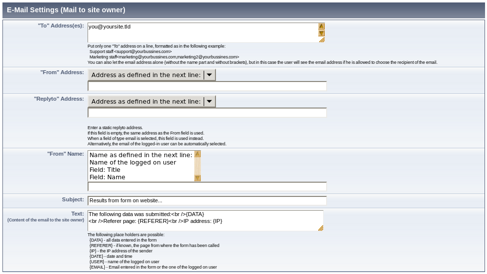

German
German  English
English
Layout << ^ Settings of MPForm ^ >> Confirmation mail
MPForm Documentation: E-Mail Settings (mail to site owner)
Level of difficulty: B

- "To" address(es)
-
Each page with content in this field tries to send an email after a form has been submitted successfully. This does not make much sense for a multi page form except for the last page of the series. By default the email is sent to all recipients listed in the settings field "To" address(es). You can also add a field of type E-Mail recipient to the form. If such a field exists, it will be filled with the name parts of the recipients listed in the backend. If no name part exists, the email address itself is used. A field of type E-Mail recipient is a select box listing all possible recipients, from where the user can choose the apropriate recipient for his message.
Each address is required to use its own line and one of the following formats:
Support <support@yourbussines.com>
Marketing <marketing@yourbussines.com,marketing2@yourbussines.com>
<hotline@yourbussines.com>As the third example shows, it is possible to use the email address without name part and angle brackets. In this case the user will actually see the email address if he is allowed to select the recipient. If the user selects Marketing in the examples above, the form will be sent to both addresses listed within the angle brackets on this line.
- "From" address
- In order not to be qualified as SPAM, emails should contain a valid "From" address.
The real sender is you, because the email has been sent from your own web site.
You either can set a static address (e.b. web-form@...) or you ask the user
for his own email address (with a field of type E-Mail-Address)
and use that one or you select E-Mail of the logged on user
- "From" name
- This field works along the lines of the previous. If you want to use the name of the user,
you need to use a Text field (single line). If you have several ones, e.g. first name and last name,
you can also select multiple fields here.
- "Reply To" address
- With this field you can specify an address for the "reply-to"-field which differs
from the "From"-address. This field behaves exactly as the one for the
"From" address. If you insert an email address here, that one is used for the
"reply-to" field of the email. If you leave this field empty, the
"From"-address is used instead.
- Subject
- This is the Subject header line of the email. There is a field type E-Mail Subject (Suffix). If you use this type of field in your form, its content will be added to the content of the subject defined in the backend. You can insert place holders of the form {FIELD42}, which let you insert the value submitted by that field for the place holder.
- Text
- This is the real content of the email. Place holders will be replaced by the content.
{DATA} stands for the entire user input.
{REFERER} contains the page from where the user has accessed the form, {DATE} is the current date,
{USER} contains the user name in case the user is registered and logged into website baker
and {EMAIL} is the From address as it is adjusted above.
Attention Pitfall: It makes no sense to use more than one of each field of the types E-Mail recipient and E-Mail Subject (Suffix) at a page. If you do it anyways, the results might be unsuspected.